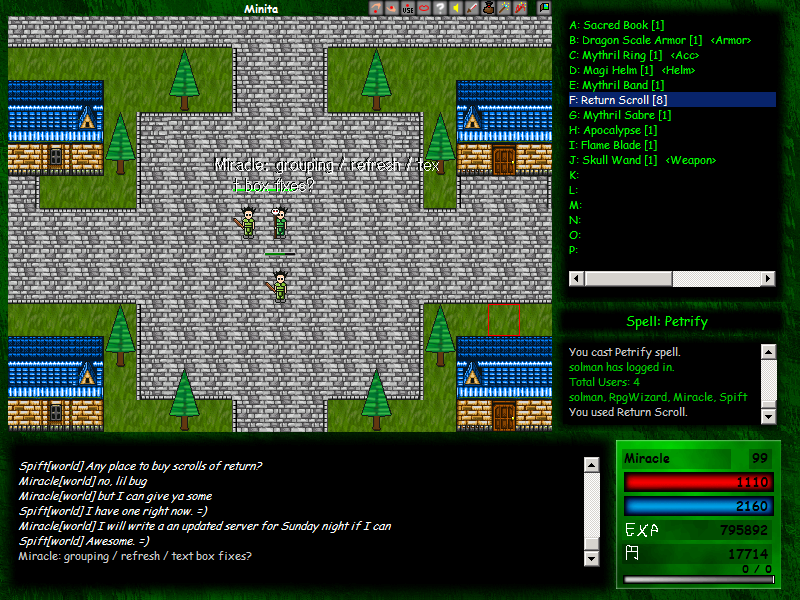

In 2002 & 2003, I created an online game called Aspereta. Simply put, it was inspired by the early versions of Nexus TK.

You can follow any updates on Discord, instagram (@lost.aeon) and wiki, or see what else I'm working on at jacques.io.
© 2020 The Dream Forge, LLC